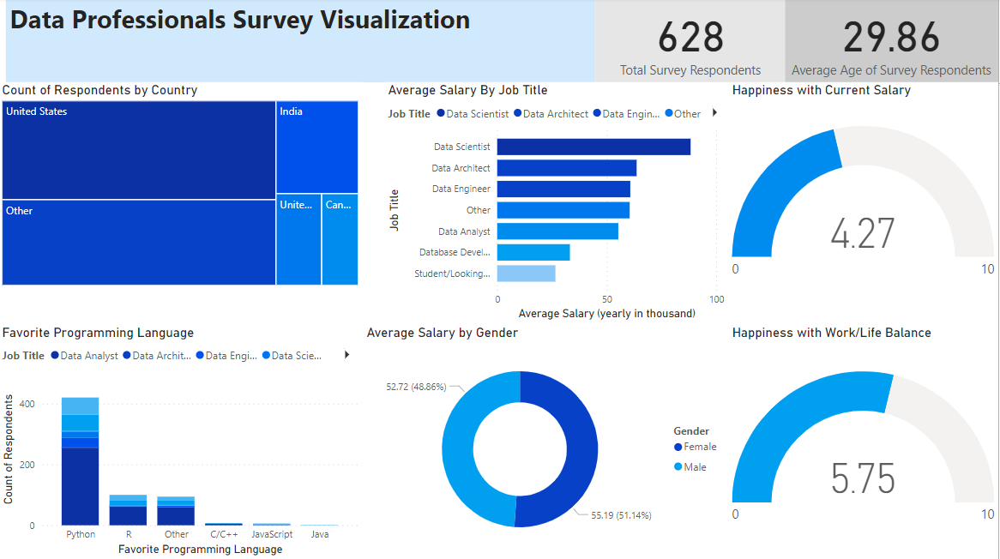
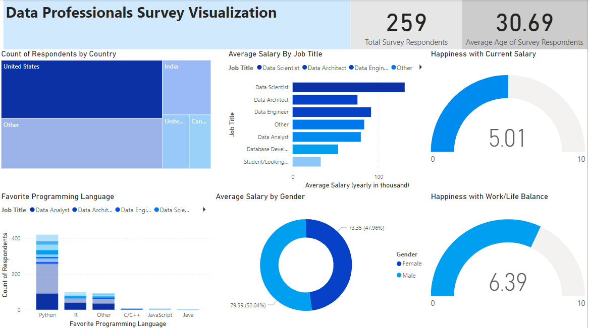

An online survey dataset was obtained from a GitHub source. This dataset encompasses responses collected from diverse data professionals worldwide, capturing information on their data profession, preferred programming languages, salary range, workplace satisfaction across various categories, gender, expectations in data professions, country of residence, and other pertinent details.

The primary dataset underwent cleaning and transformation to enhance dashboard visualization, employing the following techniques for improved data analysis:
Data has been visualized across various categories, with the total count and average age of respondents featured prominently in the top row of the dashboard. The transformed dataset is presented using the following view types:
Stacked Bar Chart : The "Average Salary By Job Title" chart illustrates the average salary across different professions. Notably, Data Scientists have the highest average salary, while the Data Analyst profession ranks third lowest.
Stacked Column Chart : "Favorite Programming Language" is visualized through a stacked bar chart, revealing the preferences of specific data professionals for particular programming languages. Python emerges as the most favored language among data analysts.
Donut Chart : "Average Salary by Gender" is showcased in a donut chart, highlighting the average salary according to gender. Interestingly, females earn slightly more than males.
Gauge : "Happiness with Current Salary" and "Happiness with Work/Life Balance" are depicted in gauge charts, offering an average happiness score for the entire survey dataset.
Treemap : "Count of Respondents by Country" is represented in a treemap, indicating that the majority of survey respondents are from the United States and Canada. The treemap also serves as a filter, allowing users to click on a specific country to filter the entire dashboard data accordingly.
